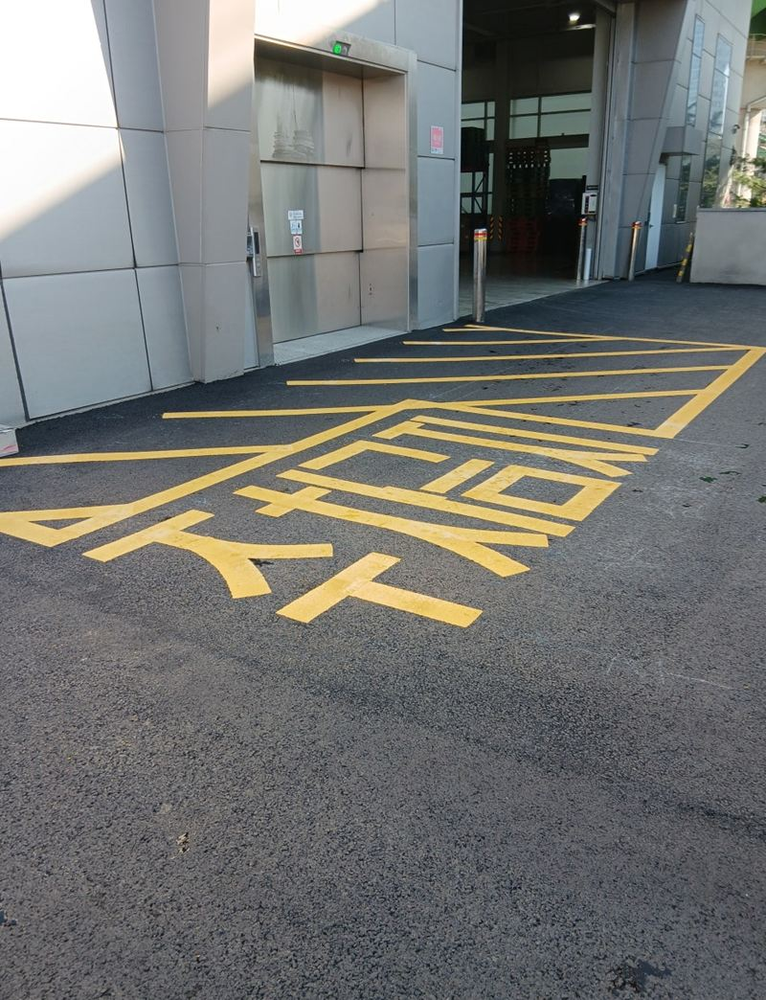
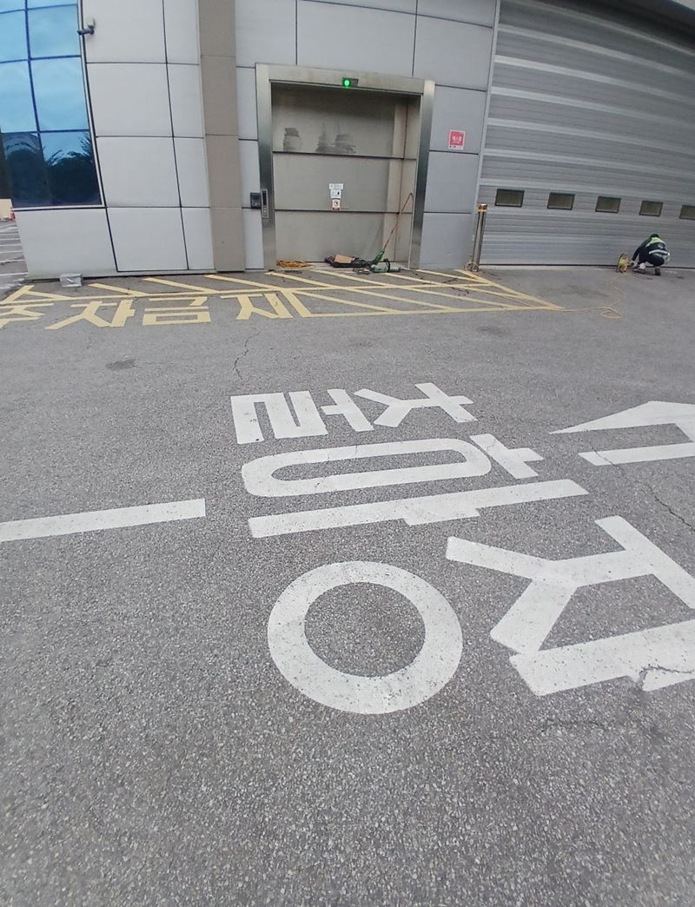
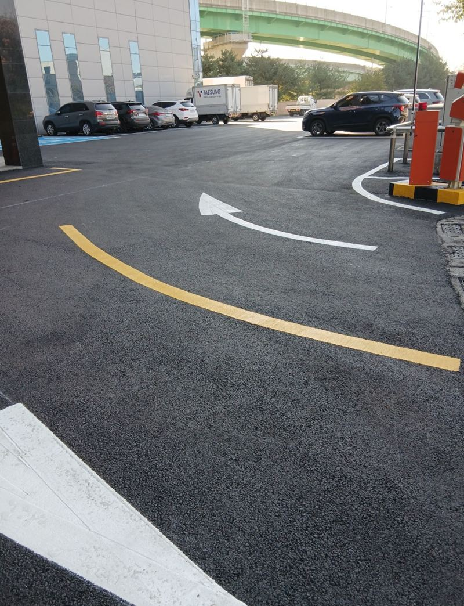
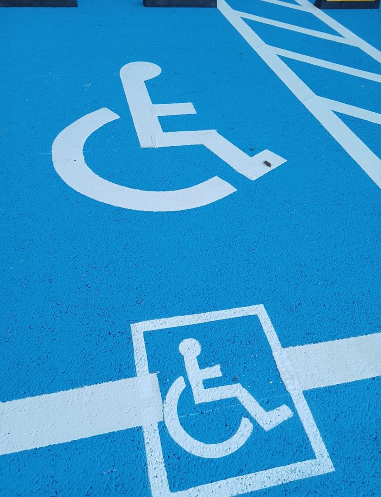
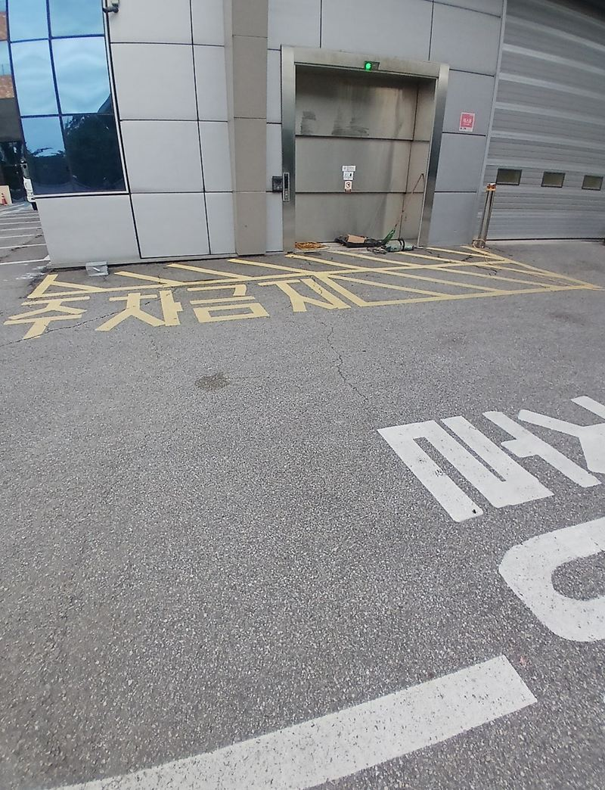
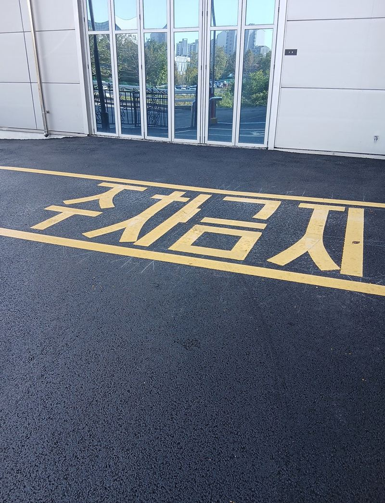
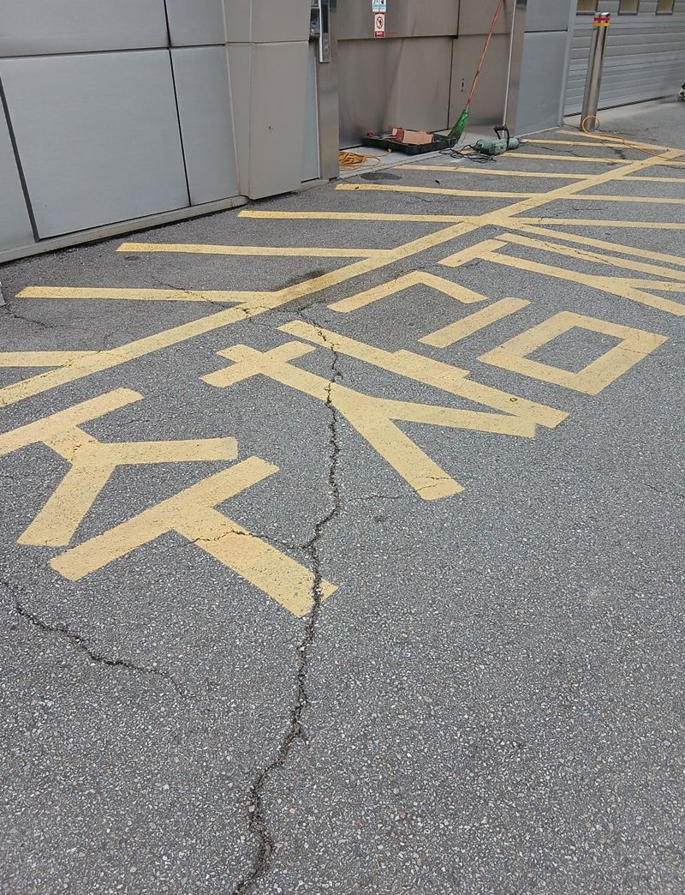

군포 주차장 바닥 주차선 도색 비용과 순서


장애인 구역금지 구역← 밀어서 두 구역 비교 →
"아스콘을 새로 깔았는데 주차선이 없어서 주차가 엉망이에요. 장애인 주차구역도 같이 표시할 수 있을까요?" 군포 당동 회사 주차장이었어요. 포장을 새로 하면서 예전 라인 흔적이 모두 사라져, 어디에 대야 할지 아무도 몰랐어요. 바닥을 세척하고 프라이머를 바른 뒤 테이프로 구획을 먼저 잡고, 흰 주차선·노란 금지선·파란 장애인 구역을 나눠 칠했어요.
| 현장 | 군포 당동 회사 주차장, 아스콘 포장 직후 |
|---|---|
| 요청 | 주차 구획선 전체, 금지 구역, 장애인 주차구역 표시 |
| 한 일 | 고압 세척·블로워 → 에폭시 프라이머 → 테이핑으로 구획 → 백색·황색·청색 도색 → 장애인 표시 → 테이프 제거·점검 → 건조 |
| 인원 | 4명 |
새 아스콘에 바로 칠하면 안 되는 이유
새로 깐 아스콘 위에는 먼지와 모래가 얇게 남아 있어요. 그대로 칠하면 페인트가 바닥이 아니라 먼지에 붙어서, 몇 달 안에 들뜨고 벗겨져요. 그래서 고압 세척기와 블로워로 표면을 깨끗이 한 뒤, 완전히 마르면 에폭시 프라이머를 먼저 발랐어요. 프라이머를 건너뛰면 한두 달 만에 라인이 깨지기도 해요.


주차선 도색 순서
세척과 프라이머
먼지와 모래를 걷어 내고, 마른 바닥에 접착을 돕는 프라이머를 발랐어요.
테이핑으로 구획 잡기
기존 흔적이 없어 위치를 처음부터 잡아야 했어요. 줄자와 수평계로 재며 테이프를 붙였어요. 여기서 조금만 틀어져도 다 칠하고 나면 전체가 비뚤어 보여요.
색별 도색
일반 주차선은 흰색 내마모 페인트, 금지 구역은 노란색, 장애인 구역은 파란색으로 칠했어요. 장애인 표시는 파란 바탕이 완전히 마른 뒤 휠체어 그림을 따로 올렸어요. 겹쳐 칠하면 색이 번져요.


테이프 제거와 건조
테이프를 천천히 떼며 끊기거나 번진 곳이 없는지 확인하고, 다 마를 때까지 차가 들어오지 않게 막았어요.


주차선 크기와 색 기준
| 구분 | 크기·색 |
|---|---|
| 일반 주차칸 | 대략 2.4m × 5m, 흰색 |
| 장애인 주차칸 | 폭 3.3m 이상, 파란 바탕 + 휠체어 표시 |
| 주차·정차 금지 | 노란색 선과 글씨 |
칸 크기는 주차장 폭과 기둥 위치에 따라 조금씩 조정해요. 칸이 너무 좁으면 문을 열다 옆 차를 찍어요.
도색 후 관리
칠한 뒤 하루 정도는 차를 대지 않아야 페인트가 충분히 굳어요. 겨울에는 기온이 너무 낮으면 잘 붙지 않아서, 따뜻한 낮이나 날을 골라 작업해요. 6개월~1년마다 색이 바랬거나 벗겨진 곳이 없는지 보고, 닳은 곳만 덧칠하면 전체 재도색보다 부담이 적어요.
라인이 선명해지자 차들이 칸에 맞춰 서면서 주차장 동선이 훨씬 정리됐어요. 회사 쪽에서도 안전하고 보기 좋아졌다며 만족하셨어요.
포장 공사와 일정 맞추기
아스콘을 새로 깔았다면 표면이 충분히 식고 안정된 뒤에 칠하는 게 좋아요. 포장 업체 일정과 맞춰 도색 날을 잡으면 주차장을 비우는 기간을 한 번으로 줄일 수 있어요.
주차선 도색 질문
기존 라인 위에 덧칠해도 되나요?
흐려진 라인은 세척 후 덧칠할 수 있어요. 들뜬 곳은 긁어 내고 칠해요.
지하주차장도 하나요?
네, 콘크리트 바닥은 그에 맞는 프라이머와 페인트를 써요.
화살표나 글씨도 넣을 수 있나요?
진행 방향 화살표, 금지 글씨, 번호 등 원하는 표시를 넣어요.
비가 오면 어떻게 해요?
바닥이 젖으면 칠이 붙지 않아 날짜를 옮겨요.
작업 중 차는 어디에 두나요?
칠하는 구역을 나눠 진행하면 일부는 계속 쓸 수 있어요. 미리 상의해요.
도색 견적에 무엇이 들어가나요?
주차칸 수와 라인 길이, 장애인 표시·글씨 같은 특수 표시 개수, 바닥 정리 정도가 들어가요.
다른 바닥 보수 현장
주차장 전체 사진과 대략의 칸 수를 알려주세요.
전화 상담 010-4517-9872